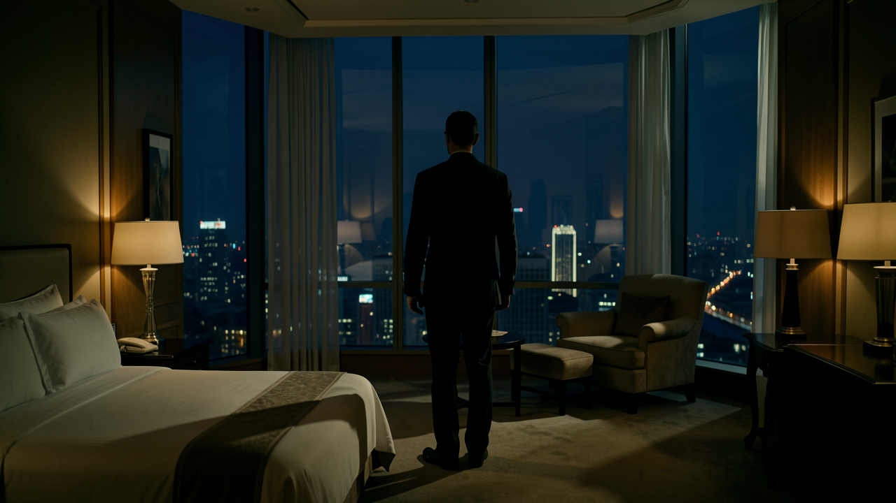

⚙️ Força + Tempo + Peso
Todo movimento se constrói sobre três elementos. O Seedance entende física, não adjetivos — então é com física que você fala.
Força
O que impulsiona o movimento — impacto, aceleração, gravidade, interação.
Tempo
Quanto tempo as ações levam — durações precisas como 0,3s ou 1,2s.
Peso
Como os objetos se comportam fisicamente — inércia, arrasto, queda.
✨ Ideia central
Movimento = sequência controlada de eventos. Antes de escrever a cena, defina câmera, força, sequência, atrasos e percepção.
🔄 Sequência: Grande → Pequeno → Partículas
A ordem dos eventos no tempo é a assinatura física da realidade. A regra: grande → pequeno → partículas.
Exemplo de impacto
Detritos → poeira → fumaça
Exemplo de água
Respingo → gotas → névoa
📷 A Câmera Define a Percepção
A câmera é o que o espectador vivencia. Sempre defina o comportamento dela: posição, movimento e estabilidade.
Posição
Baixa, aberta, close-up.
Movimento
Pan, tilt, dolly, orbit, tremor.
Comportamento
Estável vs. handheld.
🎥 O que os exemplos demonstram
- •Helmet cam, tracking shots, drone follow
- •Órbita contínua e pull-back constante
🧍 Reação Humana: Mostrar, Não Nomear
A emoção é mostrada fisicamente — através de respiração, micromovimentos, foco dos olhos e tensão corporal. Nunca diga a emoção: mostre-a através do movimento.
✗ Em vez de dizer
- ✗"Ele está assustado"
- ✗"Ela está nervosa"
✓ Mostre
- ✓Dedos escorregando
- ✓Olhos se arregalando
- ✓Respiração mudando
📏 Detalhes Mensuráveis & Timing
O timing cria realismo. Use detalhes mensuráveis — tempo, distância e ângulo — e controle a velocidade. Sem descrições vagas.
timing: acao_principal: "0.3s — impacto" reacao_corporal: "1.2s — tensão e recuo" slow_motion: "30% da cena em câmera lenta" efeitos_residuais: "poeira permanece por 2s"
📌 Regras-chave
- ❗Sem descrições vagas
- 📏Use tempo, distância e ângulo
- 🎯Foque em ações observáveis
- 🎥Sempre defina o comportamento da câmera
🔁 Movimento Secundário
Tudo continua depois da ação principal. Essas camadas atrasadas criam profundidade e realismo.
🧠 Conclusão final
Você não precisa descrever tudo. Você só precisa de quatro coisas — o Seedance converte isso em movimento:
📝 Tarefa — Construa uma Cena com Física
Crie sua própria cena usando este método. Inclua os quatro elementos:
- ⚡Força
- 🔄Sequência
- 📷Câmera
- 🧍Reação humana
Depois explique: por que essa velocidade? por que essa câmera? o que o espectador sente, sem nomear emoções? Mostre tudo através do movimento e do timing.
📌 Resumo do Módulo
Próximo Módulo:
5.3 — Controle por YAML no Seedance 2